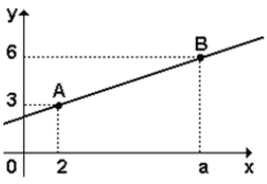

A figura representa o gráfico de uma função do 1º grau que passa pelos pontos A e B, onde a 2.

O ponto de interseção da reta "" com o eixo x tem abscissa igual a:
Resposta:
Várias perguntas dos vestibulares são feitas para confundir o candidato. Para evitar confusão, os coeficientes da função serão dados em letras maiúsculas: não confundir com os nomes dados aos pontos. Portanto, teremos uma função da seguinte forma:
Multiplicando a primeira equação por (-1) e resolvendo o sistema, temos:
Como já temos o valor do coeficiente angular (A), agora podemos encontrar o valor de B apenas substituindo esse valor em qualquer uma das equações iniciais. Usaremos a primeira:
Como o exercício pede o ponto de intersecção da reta com o eixo x, ele quer o valor da raiz.